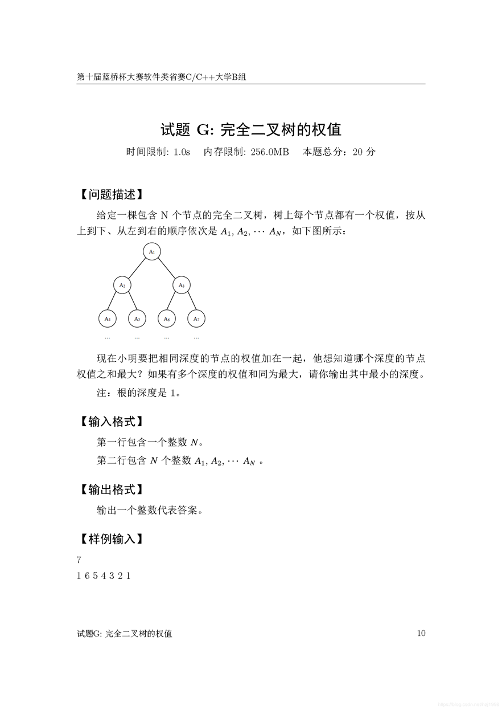
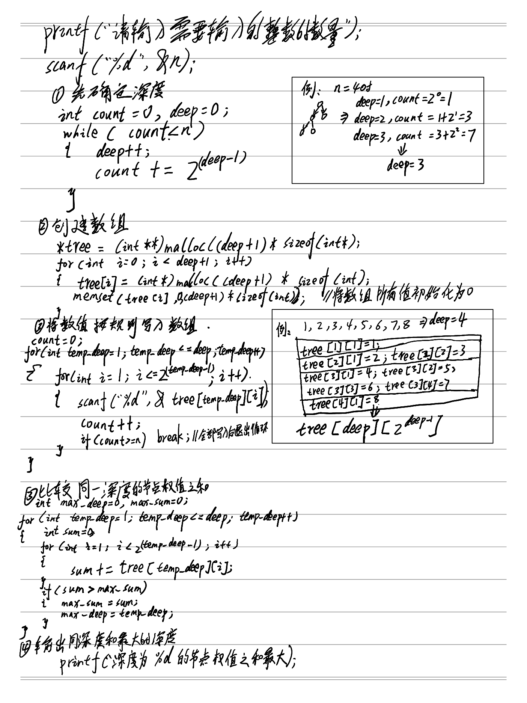

#include<stdio.h> #include<stdlib.h> #include<math.h> #include<string.h> int main(void) { int n; printf("请输入需要输入的整数的数量："); scanf("%d", &n); // 确定深度 int count = 0, deep = 0; while(count < n) { deep++; count += pow(2.0, (deep - 1)); } // 创建数组 int **tree; tree = (int **)malloc((deep + 1) * sizeof(int *)); for (int i = 0; i < deep + 1; i++) { tree[i] = (int *)malloc((deep + 1) * sizeof(int)); memset(tree[i], 0, (deep + 1) * sizeof(int)); } // 将输入的值让完全二叉树的规则输入数组 count = 0; for(int temp_deep = 1; temp_deep <= deep; temp_deep++) { for(int i = 1; i <= pow(2.0, temp_deep - 1); i++) { scanf("%d", &tree[temp_deep][i]); count++; if(count >= n) break; // 当所有元素写入之后推出输入循环 } } // 比较同一深度的节点权值之和 int max_deep = 0, max_sum = 0; for(int temp_deep = 1; temp_deep <= deep; temp_deep++) { int sum = 0; for(int i = 1; i <= pow(2.0, temp_deep - 1); i++) { sum += tree[temp_deep][i]; } if(sum > max_sum) { max_sum = sum; max_deep = temp_deep; } } printf("深度为 %d 的节点权值之和最大\n", max_deep); printf("\n"); system("pause"); }